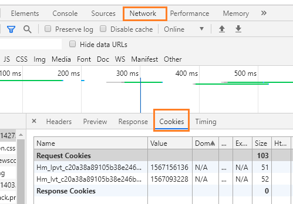
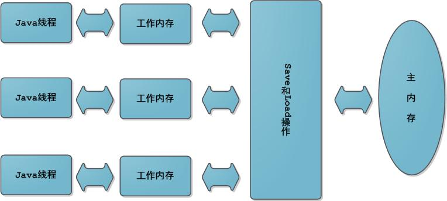
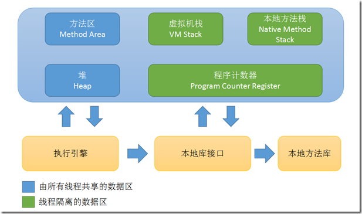
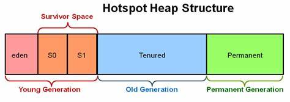
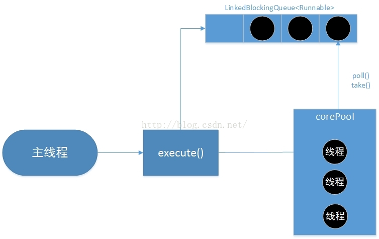
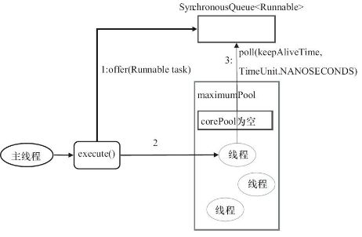
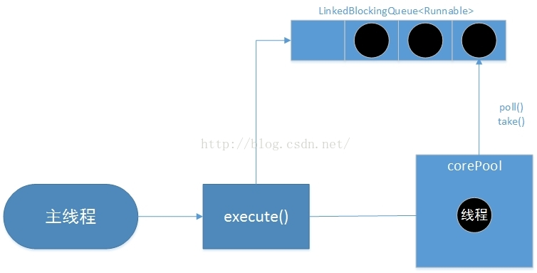
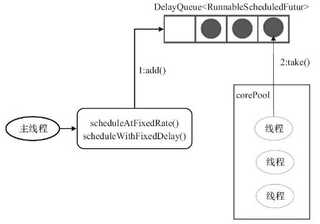

力争清晰完整准确（逐步完善，持续更新）
3、反射中，Class.forName和ClassLoader.loadClass的区别
更准确的说，是Class.forName（"SomeClass")和ClassLoader.getSystemClassLoader().loadClass("SomeClass")的区别
Class.forName（“SomeClass”）= Class.forName(className,true,classloader）
ClassLoader.loadClass(className) = ClassLoader.loadClass(className,false)类和接口的装载及初始化，请参看 https://docs.oracle.com/javase/specs/jls/se7/html/jls-12.html#jls-12.2 之12.2和12.4。
4、session和cookie的区别与联系，session的生命周期，多个服务部署时session管理
这个得从HTTP协议是无状态说起。http协议就是客服端向服务器发起一次请求，链接，然后传数据，断开链接。
就是第一次客户端A来了,在服务器要了些资源，干了些事，然后断开链接，走了。没有谁记录这次链接的一些状态，下一次客户端A再来一次，服务器不认识它，不知道它来过，也不知道它上次干过啥，完全当作新的一次链接访问来处理。就如同生活中有个陌生人来你家做客，吃饭打牌玩游戏，然后他回家了。下次这家伙又来，结果你有遗忘症，完全认不得这哥们。
就是第一次客户端A来了,在服务器要了些资源，干了些事，然后断开链接，走了。有东西记录这次访问的一些信息，比如操作记录、用户名密码等。这次就是有个陌生人来你家做客，吃饭打牌玩游戏，然后他回家了。下次这家伙又来，主人是有正常记忆的人，对这哥们有印象。
session和cookie的作用就是记录访问用户和服务器的交互状态。它们让http请求变成了能记录状态的会话。cookie存在客户端，B/S里客户端就是浏览器；session存在服务器。
cookie截图如下:

存放key/value键值对数据。当用户通过HTTP访问服务器,服务器会在reponse里将这些“键值对”信息给到客户端浏览器，并对这些数据做一定的限制。在条件符合的时候，用户再次访问这个服务器，数据又被完整带回服务器（在HTTP header里）。 Cookie设计的初衷是记录一段时间内用户访问Web应用的行为路径。
缺点：Cookie可能被盗和伪造等
session基于cookie工作的。同一客户端和服务器交互时，不需要每次都回传所有Cookie信息，只需要传个唯一ID（客户端第一次访问服务器时服务器生成的唯一标识），服务端每次回传这个唯一标识（sessionId),服务器就知道这个客户端是谁了，来服务器端干过啥。减少了客服端和服务端每次交互传输的数据量，节省带宽。在PV过亿的情况，节省的带宽就相当可观了
缺点：Session不易在多台服务器间共享等
5、Java中的队列都有哪些，有什么区别
6、详谈一下Java的内存模型以及GC算法
Java内存模型（Java Memory Model, JMM)
简单地先从硬件角度说，CPU和存储设备速度相差几个数量级，而CPU高速运算的数据源及运算的结构，不可避免要和存储设备有读写交互，单靠寄存器搞不定。所以中间搞个高速缓存，解决CPU与内存的速度矛盾。这样一来，解决了问题，又增加了新的问题，复杂性增加了（自不待言），缓存一致性的问题又来了（Cache Coherence)。
Java虚拟机的“内存模型”可以说是对特定的内存和高速缓存读写过程的抽象，屏蔽掉各种硬件和操作系统的内存访问差异，确保Java程序在各种平台上运行效果一样，不需要再改代码（跨平台, Write once, run everywhere）。而诸如C++等语言，直接使用物理硬件和操作系统的内存模型，换个平台可能就会出错，所以在某些场景必须针对不同的平台编写不同的分支处理程序。
不说了，上图


这个和前面的划分不是同一层次角度，面试时有面试官，随手写段代码，让我区分里面的变量等分别是放在那个区域的。
1）程序计数器（Program Counter Register)
线程私有（有游戏主程问我哪些是线程私有的，这个问题在思考什么呢）
2) Java虚拟机栈（Java Virtual Machine Stacks)
线程私有
3) 本地方法栈 (Native Method Stack)
4）堆（heap)

线程共享
5) 方法区（Method Area)
线程共享
6）运行时常量池（Runtime Constant Pool)
推荐 https://blog.csdn.net/javazejian/article/details/72772461
7、JAVA10、JAVA11的新特性
JAVA10 新特性官方发布页： https://www.oracle.com/technetwork/java/javase/10-relnote-issues-4108729.html
Collectors 类新增 toUnmodifiableList, toUnmodifiableSet, 和toUnmodifiableMap 方法JAVA11 新特性官方发布页: https://www.oracle.com/technetwork/java/javase/11-relnote-issues-5012449.html
卧槽，最近jdk更新有点快，都13了
8、Java内存泄漏的问题调查定位：jmap, jstack的使用
9、Spring的体系结构和jar用途
10、Spring MVC的运行原理
11、Spring Boot的执行过程
spring boot 类加载过程和tomcat类加载过程的区别，也是面试常问
12、Spring IOC和AOP的底层实现
14、Spring boot 的优势和劣势，以及适用场景等
15、讲一下Sping Cloud和Dubbo的优缺点
16、什么是Hystrix?它如何实现容错？
hystrx 工作原理，详见 https://segmentfault.com/a/1190000012439580
17、什么Netflix Feign?它的优点是什么？
18、谈一谈分布式一致性到CAP理论，BASE理论
三者至多同时满足其中的两个，具体参见CAP猜想： https://people.eecs.berkeley.edu/~brewer/cs262b-2004/PODC-keynote.pdf —— 由加州大学伯克利分校的Eric Brewer教授于2000年在ACM PODC（Principles of Distributed Computing）会议上提出
基于大规模互联网分布式实践经验和CAP理论，权衡考虑CAP中的一致性和可用性，大家发现即使难以满足强一致性（Strong consistency)，但应用应该结合自身业务特点，实现在有限时间内达到最终一致性（Eventual consistency)
19、常用的线程池模式以及不同线程池的使用场景—面试出现频率非常高
定长线程池

源码如下：
public static ExecutorService newFixedThreadPool(int nThreads) {
return new ThreadPoolExecutor(nThreads, nThreads,
0L, TimeUnit.MILLISECONDS,
new LinkedBlockingQueue<Runnable>());
}
可缓存的线程池

源码如下：
public static ExecutorService newCachedThreadPool() {
return new ThreadPoolExecutor(0, Integer.MAX_VALUE,
60L, TimeUnit.SECONDS,
new SynchronousQueue<Runnable>());
}
单一线程池

1）只会创建一个工作线程，即corePoolSize和maxiumPoolSize都被设置1，其它的同FixedThreadPool
public static ExecutorService newSingleThreadExecutor() {
return new FinalizableDelegatedExecutorService
(new ThreadPoolExecutor(1, 1,
0L, TimeUnit.MILLISECONDS,
new LinkedBlockingQueue<Runnable>()));
}2）采用的阻塞队列为LinkedBlockingQueue
可调度线程池 （处理延时或定时任务）

源码如下：
public ScheduledThreadPoolExecutor(int corePoolSize) {
super(corePoolSize, Integer.MAX_VALUE, 0, NANOSECONDS,
new DelayedWorkQueue());
}抛出 "RejectedExecutionException"异常，拒绝策略包括4种（implements RejectedExecutionHandler),
推荐： https://blog.csdn.net/z_s_z2016/article/details/81674893
20、ReentrantLock 和 synchronized的区别
21、AtomicInteger和volatile等线程安全操作的关键字的理解和使用
关于线程安全，我的理解就是一段代码在单线程下跑完的结果在多线程下跑完一样。
volatie作用于fields,语义表示内存可见性。也就是说，一旦最新对此值作了修改，所有的线程都知道；又可防止指令重排序，保证多线程下的线程安全。
AtomicInteger的存储值的value被volatile修饰符限定，即保证了其线程安全。主要用来计数
源码片段如下：
private static final Unsafe unsafe = Unsafe.getUnsafe();
private static final long valueOffset;
static {
try {
valueOffset = unsafe.objectFieldOffset
(AtomicInteger.class.getDeclaredField("value"));
} catch (Exception ex) { throw new Error(ex); }
}
private volatile int value;AtomicInteger源码比较简单，主要的几个接口，都是调用Unsafe类的 compareAndSwapInt（）、getAndAddInt（）、getAndSetInt（）实现。
valueOffset，也就是内存偏移量。AtomicInteger的原子操作就是依靠内存偏移量来实现的。
public final boolean compareAndSet(int expect, int update) {
return unsafe.compareAndSwapInt(this, valueOffset, expect, update);
}
简单说，就是更新之前，先读取，看读取的actual vulue 和原来的值(expect)是否是一致的。如果一致，就直接更新；否则更新expect，再次读取。保证了在不加锁的情况下，不会出问题，效率还高
关于volatile详情，请参见：
关于Unsafe类，请移步 https://tech.meituan.com/2019/02/14/talk-about-java-magic-class-unsafe.html
关于
22、分布式锁三种实现方式
23、socket框架netty的使用，以及NIO的实现原理，为什么是异步非阻塞
24、简述NIO的最佳实践
25、Zookeeper的用途，选举的原理是什么
26、手写一个哈夫曼树
哈夫曼树（Huffman Tree）又称最优二叉树
*****************************************************************************************************
精力有限，想法太多，专注做好一件事就行
*****************************************************************************************************